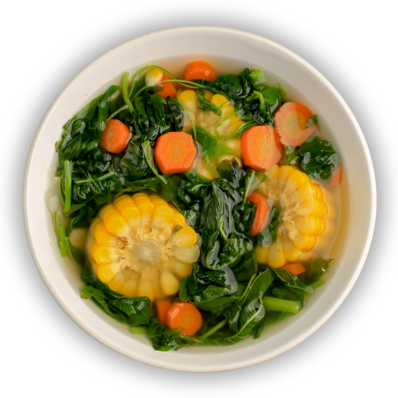

Beranda
Tentang Kami
Resep
Tips
Sayur Bayam Jagung Wortel

Bahan dan Alat:
1 ikat bayam
1 jagung manis
1 wortel
1 cabai merah
2 siung bawang merah
1 siung bawang putih
2 ruas jari temu kunci
Garam secukupnya
Gula secukupnya
Penyedap secukupnya
500 ml air
Cara Membuat:
Potong bayam, lalu cuci hingga bersih dengan air mengalir.
Potong jagung manis dan wortel yang sudah dicuci bersih sesuai selera.
Iris menyerong cabai merah, iris halus bawang merah dan bawang putih. Lalu, geprek temu kunci.
Tumis sebentar bawang merah, bawang putih, dan cabai merah.
Tambahkan air, tunggu hingga mendidih. Lalu, masukkan jagung dan wortel.
Masukkan bayam, lalu aduk sampai merata.
Tambahkan garam, gula, dan penyedap secukupnya. Aduk hingga merata.
Sayur bayam siap disajikan.